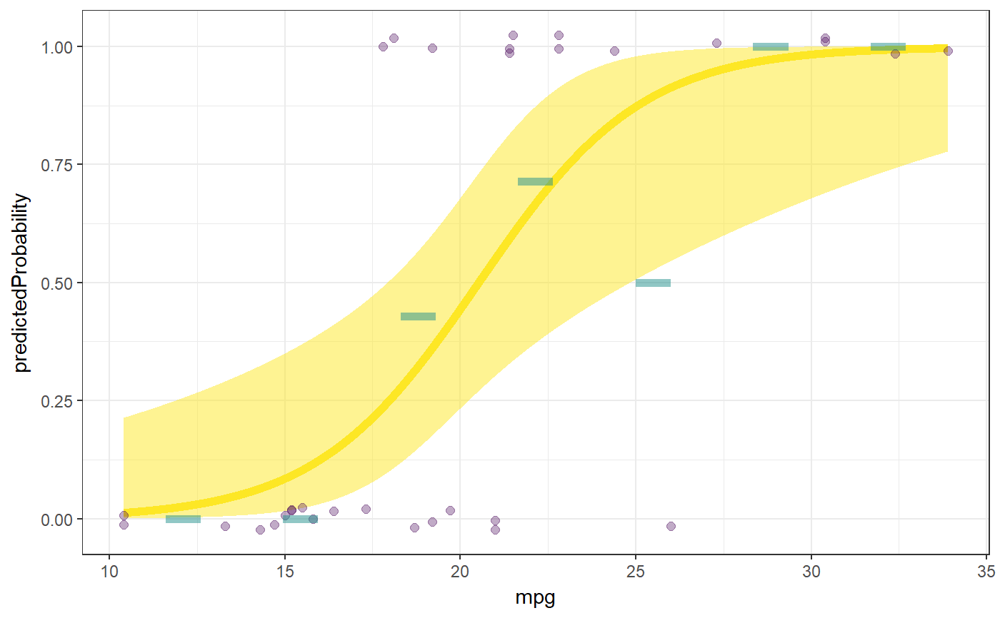
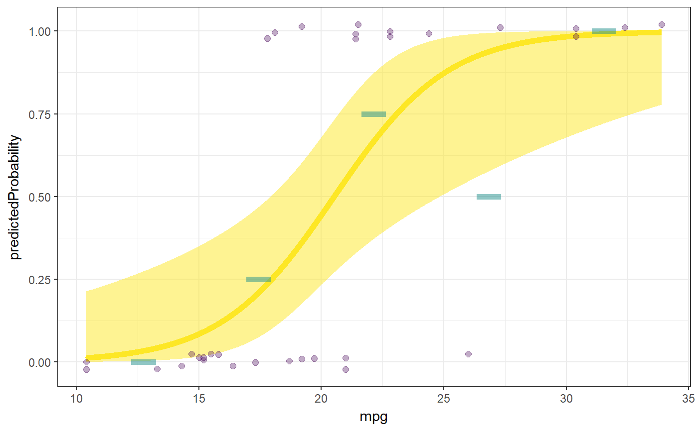

This function is meant as a userfriendly wrapper to approximate the way logistic regression is done in SPSS.
logRegr(formula, data = NULL, conf.level = 0.95, digits = 2, pvalueDigits = 3, crossTabs = TRUE, plot = FALSE, collinearity = FALSE, env = parent.frame(), predictionColor = viridis(3)[3], predictionAlpha = 0.5, predictionSize = 2, dataColor = viridis(3)[1], dataAlpha = 0.33, dataSize = 2, observedMeansColor = viridis(3)[2], binObservedMeans = 7, observedMeansSize = 2, observedMeansWidth = NULL, observedMeansAlpha = 0.5, theme = theme_bw())
| formula | The formula, specified in the same way as for |
|---|---|
| data | Optionally, a dataset containing the variables in the formula (if not specified, the variables must exist in the environment specified in |
| conf.level | The confidence level for the confidence intervals. |
| digits | The number of digits used when printing the results. |
| pvalueDigits | The number of digits used when printing the p-values. |
| crossTabs | Whether to show cross tabulations of the correct predictions for the null model and the tested model, as well as the percentage of correct predictions. |
| plot | Whether to display the plot. |
| collinearity | Whether to show collinearity diagnostics. |
| env | If no dataframe is specified in |
| predictionColor, dataColor, observedMeansColor | The color of, respectively, the line and confidence interval showing the prediction; the points representing the observed data points; and the means based on the observed data. |
| predictionAlpha, dataAlpha, observedMeansAlpha | The alpha of, respectively, the confidence interval of the prediction; the points representing the observed data points; and the means based on the observed data (set to 0 to hide an element). |
| predictionSize, dataSize, observedMeansSize | The size of, respectively, the line of the prediction; the points representing the observed data points; and the means based on the observed data (set to 0 to hide an element). |
| binObservedMeans | Whether to bin the observed means; either FALSE or a single numeric value specifying the number of bins. |
| observedMeansWidth | The width of the lines of the observed means. If not specified (i.e. |
| theme | The theme used to display the plot. |
This function
Mainly, this function prints its results, but it also returns them in an object containing three lists:
The arguments specified when calling the function
Intermediat objects and values
The results, such as the plot, the cross tables, and the coefficients.
regr and fanova for similar functions for linear regression and analysis of variance and glm for the regular interface for logistic regression.
### Simplest way to call logRegr logRegr(data=mtcars, formula = vs ~ mpg);#>#> Logistic regression analysis for formula: vs ~ mpg #> #> Significance test of the entire model (all predictors together): #> Cox & Snell R-squared: 0.44, #> Nagelkerke R-squared: 0.58 #> Test for significance: ChiSq[1] = 18.33, p < .001 #> #> Predictions by the null model (56.25% correct): #> #> Predicted #> Observed 0 #> 0 18 #> 1 14 #> #> Predictions by the tested model (81.25% correct): #> #> Predicted #> Observed 0 1 #> 0 15 3 #> 1 3 11 #> #> Raw regression coefficients (log odds values, called 'B' in SPSS): #> #> 95% conf. int. estimate se z p #> (Intercept) [-16.74; -3.9] -8.83 3.16 -2.79 .005 #> mpg [0.18; 0.82] 0.43 0.16 2.72 .007 #>### Also ordering a plot logRegr(data=mtcars, formula = vs ~ mpg, plot=TRUE);#>#> Logistic regression analysis for formula: vs ~ mpg #> #> Significance test of the entire model (all predictors together): #> Cox & Snell R-squared: 0.44, #> Nagelkerke R-squared: 0.58 #> Test for significance: ChiSq[1] = 18.33, p < .001 #> #> Predictions by the null model (56.25% correct): #> #> Predicted #> Observed 0 #> 0 18 #> 1 14 #> #> Predictions by the tested model (81.25% correct): #> #> Predicted #> Observed 0 1 #> 0 15 3 #> 1 3 11 #> #> Raw regression coefficients (log odds values, called 'B' in SPSS): #> #> 95% conf. int. estimate se z p #> (Intercept) [-16.74; -3.9] -8.83 3.16 -2.79 .005 #> mpg [0.18; 0.82] 0.43 0.16 2.72 .007#>### Only use five bins logRegr(data=mtcars, formula = vs ~ mpg, plot=TRUE, binObservedMeans=5);#>#> Logistic regression analysis for formula: vs ~ mpg #> #> Significance test of the entire model (all predictors together): #> Cox & Snell R-squared: 0.44, #> Nagelkerke R-squared: 0.58 #> Test for significance: ChiSq[1] = 18.33, p < .001 #> #> Predictions by the null model (56.25% correct): #> #> Predicted #> Observed 0 #> 0 18 #> 1 14 #> #> Predictions by the tested model (81.25% correct): #> #> Predicted #> Observed 0 1 #> 0 15 3 #> 1 3 11 #> #> Raw regression coefficients (log odds values, called 'B' in SPSS): #> #> 95% conf. int. estimate se z p #> (Intercept) [-16.74; -3.9] -8.83 3.16 -2.79 .005 #> mpg [0.18; 0.82] 0.43 0.16 2.72 .007#>